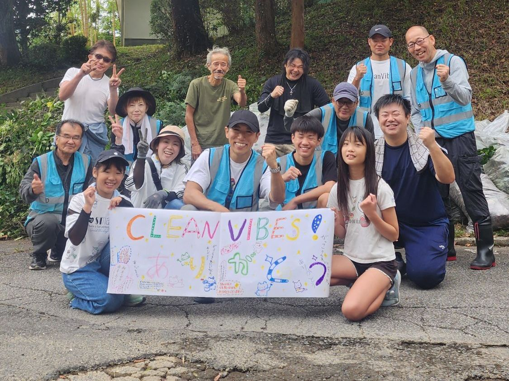

伊東市の美化・防草ボランティア
綺麗なまちを、
後世へ。
Clean Vibes（クリーンバイブス）は、伊東市で、市民の手でまちの美化と雑草対策に取り組んでいます。
- 活動開始2022年4月
- 活動回数（2026年10月時点）累計500回以上
- 活動日時主に土日祝 朝6時30分から

ABOUT
Clean Vibesとは
2022年4月、伊東のオレンジビーチで活動を始めました。
道路や歩道、通学路、公園の駐車場など、毎日の暮らしで使う場所を、自分たちの手できれいにしています。土日祝の早朝に集まり、草を取り、側溝を掃除し、消えかけた白線を引き直してきました。活動は累計500回以上になります（2026年10月時点）。
かつて地域にあった、みんなで草刈りや奉仕作業をする習慣は、高齢化や働き方の変化で少しずつ減ってきています。だから私たちは、草を何度も刈り続けるのではなく、草が生えにくい状態をつくることで、手入れの回数を減らしてもきれいなまちが続く仕組みをつくりたいと考えています。
目指しているのは、自分たちのまちを自分たちで大切にすることが、伊東の文化として根づくことです。2030年、このやり方を届けきったら、団体としての役目を終えると決めています。


ACTIVITIES
活動内容
草は取っても、しばらくするとまた生えてきます。そこで私たちは、草を取る「除草」だけでなく、雑草が生えにくい状態をつくる「防草」まで行っています。

除草・防草
草を根から取り除き、目地や隙間を固まる砂で埋めて、雑草が生えにくい状態にします。

通学路の整備
大池小学校の通学路で、伸びた枝の伐採や除草、フェンスの水拭き、側溝や用水路の清掃を続けています。必要な許可を取り、民有地では地主さんの了承を得て作業しています。

駐車場の白線
なぎさ公園の駐車場で100台分以上、一碧湖の駐車場では市の観光課と協力して、消えかけた白線を引き直しました。
そのほかの活動
荻区でのガードレールの塗装や、小学校の清掃にも取り組んでいます。地域の高校生や子どもたちと一緒に清掃することもあります。地域の行事にも、みんなで参加しています。伊東市の外では、長野県諏訪市でもボランティア活動を行いました。
METHOD
防草の方法
私たちが作業するのは、子どもやペットも行き交う道や公園です。雨が降れば、水は側溝から海へと流れていきます。だから、除草剤は使いません。5つの工程で、雑草が生えにくい状態をつくります。
ほじる
雑草や根、たまった土を、道具で取り除きます。防草では、この下地づくりがとても大切だと考えています。
掃く
細かな土やごみを、ほうきでできるだけ取り除きます。土そのものをしっかり取りたい場所では、ブロワーではなく、コシの強いほうきを使います。
焼く
表面に残った雑草の根や種を、できる範囲で熱で処理します。火を使うため、経験者が担当し、消火の準備をしてから行います。
埋める
目地や隙間を、水で固まる砂や土で埋めます。場所に合わせて市販の資材を使い分けており、行政から支給していただいた資材も使っています。
まく
最後に水をまいて、埋めた材料を固めます。あわせてアルカリ性の水もまき、雑草が生えにくくなるか経過を確かめています。
検証中
どの工程でも、除草剤は使いません。
使っている道具
①ほじる
- いちばんの相棒草取り一番清水製作所 モンブラン太い根も細かい根も絡め取り、狭い隙間までしっかりほじれます。この道具なしに、Clean Vibesの「ほじる」はありえません。
- 根こそぎ草抜き千吉 SGJ-10細かい根を取ります。
- パワーグリップ付草取り千吉 SGT-16PW頑固な根を、力を入れてほじるときに使います。
②掃く
- 仕上がりを決める外苑ほうきアズマ工業 名匠168活動を始めた頃から使い続けているほうきです。コシが強く、溝の奥の砂や土までしっかりかき出せます。
- 手箕（てみ）千吉 ECOテミ 小集めた砂や草をすくいます。土のう袋やガラ袋に入れやすい大きさです。
③焼く
- ガスバーナーガスは、地元企業の株式会社マルヰエナジー様からご提供いただいています。
④埋める
- 始まりの原点雑草ストッパーカインズ ハード 速乾オレンジビーチの約800mの歩道は、これで施工しました。
- マサファルト水で固まる自然土大室山・さくらの里周辺で使っています。
- 散水パッチMATERAN歩道やアスファルトで使っています。
⑤まく
- セスキ炭酸ソーダニチガ水に溶かして、アルカリ性の水をつくります。
これまでの成果と、いま試していること
全体のおよそ8〜9割で、雑草を防げています
防草の施工は、オレンジビーチの歩道から始まりました。約800mの歩道を、カインズの「雑草ストッパー」（水で固まる砂）で施工した結果です。完璧ではないからこそ、何度でも手入れに通います。
モルタルを使った防草検証中
2026年11月から、モルタルを使った防草の実証実験を始めました。効果はこれから確かめます。
この方法をほかの場所で行うときは、必ず管理者の許可を得てください。火を使う工程は、経験のある人が担当してください。
参考にしている研究
- 雑草の多くは、地表近くの浅いところから芽を出す（du Croix Sissons ほか、2000年、Weed Science 48巻）
- 火を当てたときの効き方は、草の種類や育ち具合で大きく変わる（Ascard、1995年、Weed Research 35巻）
- 舗装された場所では、いくつかの方法の組み合わせや、雑草が生えにくい舗装が有効（Rask & Kristoffersen、2007年、Weed Research 47巻）
JOIN US
参加方法
伊東市内で、主に土日祝の朝6時30分から7時30分ごろまで活動しています。
初めての方、親子、観光で来られた方も歓迎です。
- STEP 1
活動カレンダーを見る
日時と場所は毎回変わります。Instagramの「活動カレンダー」でお知らせしています。天気によって場所が変わることもあるので、参加の前にご確認ください。
活動カレンダーを見る - STEP 2
InstagramのDMで申し込む
「参加希望日・お名前・人数」を、InstagramのDMでお送りください。
DMで申し込む - STEP 3
当日、軍手を持って参加
持ち物は軍手だけで大丈夫です。道具はある程度こちらで用意します。

RECORD
実績
静岡県道路利用者会議 会長表彰
令和7年度の道路愛護優良団体表彰で、公共施設の清掃活動について感謝状をいただきました（2025年9月11日）。

関東商工会議所連合会 ベスト・アクション表彰
なぎさ公園駐車場の白線の引き直しや除草など、まちづくりへの貢献を評価していただきました（2025年）。
伊東市立大池小学校・同PTA 感謝状
小学校での清掃ボランティアについて、校長先生とPTA会長から感謝状をいただきました（2025年11月17日）。
しずおかアダプトロード・プログラム
伊東市、静岡県熱海土木事務所と同意書を取り交わし、国道135号の湯川交差点〜なぎさ公園の約1kmで、清掃や除草を行っています。
伊豆新聞
- 「国道135号美化へ協働」
- 「歩道の柵 美しく」
- 「駐車場白線引き完了」
- 「クリーンバイブス関東会長賞」
これまでの歩み
2022年4月、オレンジビーチでの活動から始まりました。
- 2022年4月伊東のオレンジビーチで活動を始める
- 2024年しずおかアダプトロード・プログラムの同意書を取り交わす
- 2025年関東商工会議所連合会 ベスト・アクション表彰
- 2025年度セブン-イレブン記念財団「環境市民活動助成」
- 2025年9月静岡県道路利用者会議 会長表彰
- 2025年11月伊東市立大池小学校・同PTAから感謝状
- 2026年10月時点活動が累計500回以上に
- 2026年11月モルタルを使った防草の実証実験を開始
- 2030年（目標）このやり方を届けきって解散
SUPPORT
活動を支援する
活動には、道具や資材が欠かせません。いただいたご支援は、防草の資材や道具の購入に大切に使います。企業・団体の皆さまからの協賛も歓迎しています。
道具や資材は、Amazonの「ほしい物リスト」からもご支援いただけます。
これまでに物品や資材でご支援くださった皆さま、本当にありがとうございます。
活動を支えてくださる伊東市内の企業
- MARUTA株式会社 様活動資材のご提供
- 株式会社アクリ 様活動資材のご提供
- 株式会社野村商店・野村マテリアルプロダクツ株式会社 様活動資材のご提供
- 株式会社マルヰエナジー 様ガスのご提供

PROFILE
団体概要
- 団体名
- Clean Vibes（クリーンバイブス）
- テーマ
- 綺麗なまちを後世へ
- 活動開始
- 2022年4月（伊東のオレンジビーチから）
- 拠点
- 静岡県伊東市
- 活動日時・場所
- 主に土日祝の朝6時30分〜7時30分ごろ、伊東市内の各所（日時・場所は毎回変わります。Instagramの「活動カレンダー」でお知らせしています）
- 活動回数
- 累計500回以上（2026年10月時点）
- 表彰・感謝状
- 静岡県道路利用者会議 会長表彰（令和7年度）
関東商工会議所連合会 ベスト・アクション表彰（2025年）
伊東市立大池小学校・同PTA 感謝状（2025年11月） - 助成
- セブン-イレブン記念財団 2025年度「環境市民活動助成」
- 行政との協働
- しずおかアダプトロード・プログラム（国道135号 湯川交差点〜なぎさ公園の約1km）
- 連絡先
- InstagramのDM：@clean_vibes_ito
メール（代表 大竹）：ka@oh-life.co.jp
CONTACT
お問い合わせ
活動へのご参加、自分のまちで始めたい方のご相談、支援・協賛、取材などのお問い合わせは、次のどちらかでご連絡ください。